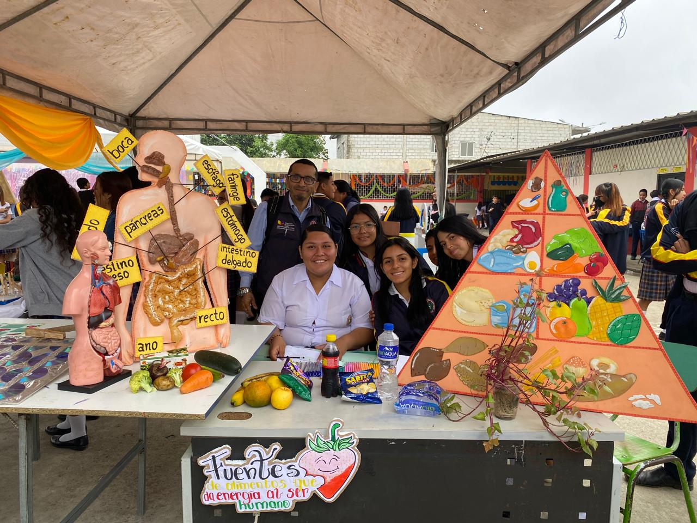
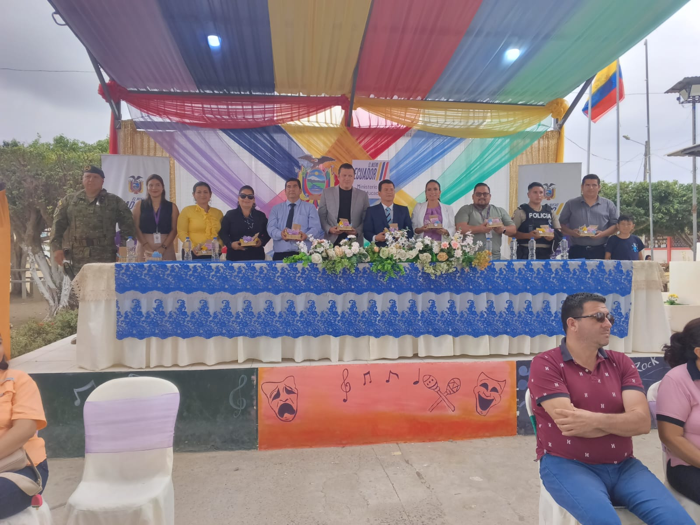

DigitalCam
Narrando el presente, construyendo el futuro
Presentación
Ultimas Noticias

Engalanamiento de la institución y programa Artístico:
El 2 de septiembre inician las festividades por el 38º aniversario de la Unidad Educativa "Dr. Camilo Gallegos Domínguez". El primer día, la comunidad educativa embellecerá las instalaciones del colegio.
Leer MásViernes De Colores:
Se realizó el concurso intercolegial "Pinceles por la Paz" como parte del plan "Gymkhana de buenas acciones", con la participación entusiasta de estudiantes del Distrito de Educación Arenillas-Huaquillas-Las Lajas en el Viernes de Colores, destacándose en baile, danza y canto.
Leer Más
Expociencia y Tecnología Camilo 2024:
El evento destacará la Radio Digital Camilina, creada por estudiantes de Tercero Informática A, y contará con la participación de diversas instituciones en la expo feria.
Leer Más
Jornadas Deportivas Camilinas 2024/2025
Se desarrolló la inauguración de las jornadas deportivas, lo cual se contó con la participación de ambas secciones del plantel (matutina, vespertina), destacando valores como empatía, respeto e igualdad en dicho evento.
Leer Más
Palabras motivadoras hacia los deportistas a cargo del alcalde Dr. Eber Ponce
Mediante un pequeño discurso de bienvenida, apertura del acto, el presente alcalde se dirigió hacia los compañeros deportistas y público presente motivando a la práctica sana del deporte y enfatizando en el uso de valores, como la empatía, respeto y solidaridad.
Leer Más
Mesa directiva presente
Dentro del acto de inauguración de las jornadas deportivas Camilinas 2024/2025 se tuvo el honor de contar con autoridades del plantel, distrito de educación y resguardo policial y militar presente durante el acto conmemorativo.
Leer Más